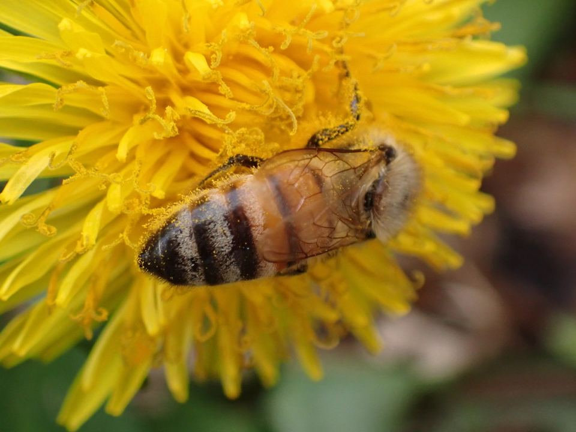

Qual bicho vamos descobrir hoje?
Explore animais incríveis, veja de pertinho e comece sua coleção.

Animais reaisem 3D Foto: Cole Shoemaker · CC BY · iNaturalist
Encontre todos os bichos
Toque num bicho para conhecer: fotos reais, ciclo de vida e curiosidades.
Sua primeira missãoEscolha um bicho para descobrir.
Nenhum bicho encontrado com esse nome.
Veja de pertinho. Sem chegar perto.
Gire animais em 3D, conheça suas partes, compare tamanhos e descubra curiosidades.
Cada descoberta tem uma história.
Complete seu álbum com os bichos que encontrou.
Diversão que continua fora da tela.
O Encontre um Bicho convida a criança a observar a natureza, fazer perguntas e descobrir o mundo ao seu redor.
- Missões no mundo realProcurar bichos de verdade no jardim, no pátio ou no parque.
- Sem anúncios e sem cadastroNenhum dado da criança é coletado. As descobertas ficam só no aparelho.
- Funciona até sem internetAdicione à Tela de Início do iPad e use na escola, mesmo sem Wi-Fi.